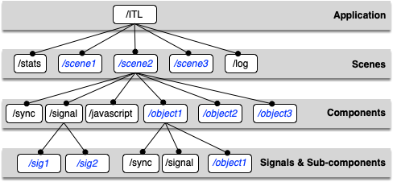

General format
An OSC message is made of an OSC address, followed by a message string, followed by zero to n parameters. The message string could be viewed as the method name of the object identified by the OSC address. The OSC address could be string or a regular expression matching several objects.
Example Sending the message x to the object which address is /ITL/scene/score with 0.5 as parameter.
/ITL/scene/score x 0.5;
The address is similar to a Unix path and supports regular expressions as defined by the OSC specification. This address scheme is extended to address any host and applications (see section interaction).
Note: A valid legal OSC address always starts with /ITL that is the application address and that is also used as a discriminant for incoming messages.
Identifiers may include letters, hyphen, underscore and numbers (apart at first position for the latter).
Some specific nodes (like signals - see section ssignal) accept OSC messages without message string:
Parameters
Message parameters types are the OSC types int32, float32 and OSC-string. In the remainder of this document, they are used as terminal symbols, denoted by int32, float32 and string.
When used in a script file, string should be single or double quoted when they include characters not allowed in identifiers (space, punctuation marks, etc.). If an ambiguous double or single quote is part of the string, it can be escaped using a '\'.
Parameters types policy is relaxed: the system makes its best to convert a parameter to the expected type, which depend on the message string. With an incorrect type and when no conversion is applied, an incorrect parameter message error is triggered.
The system is strict regarding the number of expected parameters.
Address space
The OSC address space is made of static and dynamic nodes, hierarchically organized as in figure fig:addrspace:

The OSC address space. Nodes in italic/blue are dynamic nodes.
OSC messages are accepted at any level of the hierarchy:
-
the application level responds to messages for application management (udp ports management, loading files, query messages).
-
the scene level contains scores that are associated to a window and respond to specific scene management messages. It includes a static node named stats that collects information about incoming messages, a static log node that control an embedded log window.
-
the component level contains the score components and 3 static nodes:
-
a signal node that may be viewed as a folder containing signals
- a sync node, in charge of the synchronization messages
- a javascript node, that may be adressed to run javascript code dynamically.
Each component includes a static node named debug that provides debugging information. - the signals level contains signals i.e. objects that accept data streams and that may be graphically rendered as a scene component (see Signals and Graphic signals section graphsig).
Note: Since version 1.05, each component of a score may also be a container and thus, the hierarchy described above has a potential infinite depth level. Note also that a sync node is present at each level.
Aliases
An alias mechanism allows an arbitrary OSC address to be used in place of a real address. An alias message is provided to describe aliases:
- [1] sets OSCAlias as an alias of OSCAddress. The alias may be optionally followed by message strings which are then taken as implied messages. These messages can also be optionally followed by a scaling specification.
- [2] removes OSCAddress aliases.
Note: Regular expressions are not supported by the alias mechanism and could lead to unpredictable results.
Example
# makes the address /ITL/scene/myobject available using /1/fader1
/ITL/scene/myobject alias '/1/fader1';
# the following input message:
/1/fader1 0.5;
# will be translated into:
/ITL/scene/myobject 0.5;
# create an alias with an implicit 'x' message
/ITL/scene/myobject alias '/1/fader1' x;
# the following input message:
/1/fader1 0.5;
# will be translated into:
/ITL/scene/myobject x 0.5;
Scaling
In INScore, the parameter values are generally in the range [-1, 1]. However, some devices can generate messages with their own values range (e. g. accelerometers). An optional scaling string allows to convert any input range into the [-1, 1] range.
The general form of the scaling string is [n,m], where and are 2 numbers describing the minimum and maximum input values. Any input value is then transformed into a value such that:
Example
# create an alias with an implicit 'x' message using a scaling specification
/ITL/scene/myobject alias '/1/fader1' x[0,100];
# the following input message:
/1/fader1 5;
# will be translated into:
/ITL/scene/myobject x -0.9;
Using more than one implicit message
You can use an arbitrary number of message strings in an alias message. In any case, an input message with the corresponding values is expected. For example, when the alias message has 3 messages strings, input messages are expected to have 3 associated values. These values are distributed in sequence with each message string, which also means that the input message is translated into 3 different messages.
Example
# create an alias with implicit 'x' 'y' and 'angle' messages using scaling
/ITL/scene/myobject alias '/1/fader1' x[0,100] y[0,100] angle;
# the following input message:
/1/fader1 5 60 12;
# will be translated into:
/ITL/scene/myobject x -0.9;
/ITL/scene/myobject y 0.2;
/ITL/scene/myobject angle 12;